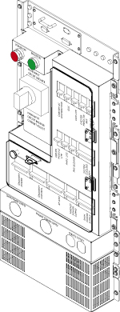
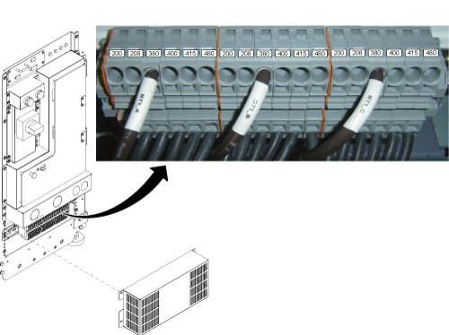
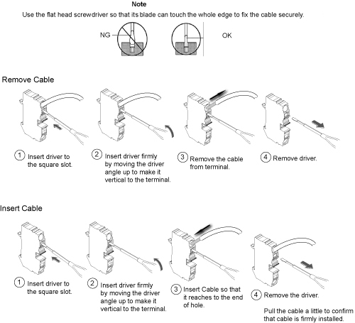
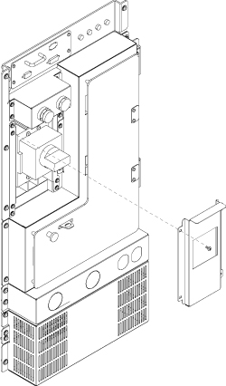
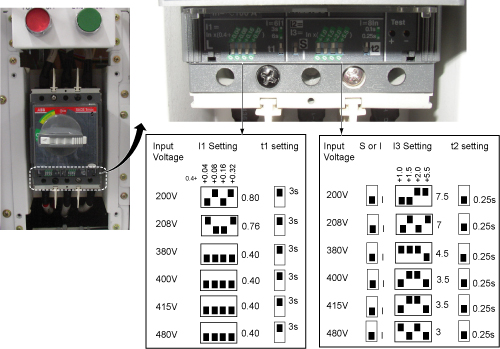
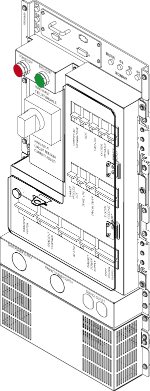

25kVA PDU Module
1 IMPORTANT SAFETY INSTRUCTIONS
SAVE THESE INSTRUCTIONS – This manual contains important instruction for 1.5T 25kVA Power Distribution Unit (PDU) that must be followed during installation, operation, and maintenance.
 |
|

 |
|
2 INTRODUCTION
2.1 General Description
The Power Distribution Unit (PDU) distributes power to various components of a General Electric Medical Systems MRI system. Three phase input voltage is selectable among six levels: 200/208/380/400/415/480 VAC. Rated frequency is 50/60 Hz. Power rating is 25 KVA continuous, 30 KVA instantaneous. The PDU mounts in a System Cabinet Rack.
Figure 1. Power Distribution Unit

2.2 Scope
This manual describes procedures for installation, basic operation of the Power Distribution Unit, simple diagnosis/isolation, and schematics of the PDU. Replacement of FRU parts are described in 'Replacement' tab CD-ROM manual.
2.2.1 SPECIFICATIONS
Specifications subject to revision without notice
2.2.2 Electrical Specifications
Power Rating:25 KVA Continuous; 30 KVA Instantaneous
Input Voltage:200/208/380/400/415/480 VAC Delta, User Selectable
Factory wired for 480VAC Delta
Output Voltage:208/120 VAC WYE
Overload Protection:Main Input Circuit Breaker with adjustable trip settings; Output distribution circuit breakers
Night Mode:Save Power when System is standby mode
3 Installation and Operation
3.1 Installation
3.1.1 Input Voltage Selection
Before connecting the input power cables, determine the nominal value of the input voltage. The PDU allows for nominal input voltages of 200, 208, 380, 400, 415, or 480 VAC (three phase). Input voltage selection is accomplished as follows:
-
On the Main Disconnect Panel (MDP), turn off the PDU circuit breaker, lock and tag appropriately.
-
Using a voltmeter or other voltage indicating device at the Primary Test Jack, check to be sure that no voltage is being applied to the input of the PDU.
-
Remove the front cover of System Cabinet and the lower cover of PDU.
Figure 2 shows the Input Voltage Selection terminal block. Figure 3 shows how to remove/install terminal cable. For each of the three phases, be sure the wire is connected to the proper terminal for the actual input voltage at the site and that the terminal screw is tight to make a good connection.
-
Remove the cover panel from the front panel of the PDU marked “MAIN INPUT CIRCUIT BREAKER CURRENT ADJUST”. See Figure 4.
-
The overload and short circuit trip settings for the Main Input Circuit Breaker must be set to the correct values corresponding to the input voltage.
-
Remove the small cover plate under the Main Input Circuit Breaker which is held in place by four screws and lift open the transparent plastic cover on the lower portion of the circuit breaker to give access to the dip switches controlling the circuit breaker operation.
-
Figure 5 shows the position of the dip switches for each input voltage selection. Set the dip SW to the correct value corresponding to the input voltage.
-
Figure 2. INPUT VOLTAGE SELECT TERMINAL BLOCK

Figure 3. How to remove/install terminal cable

|
|
Figure 4. Cover for Overload and short circuit trip dip SW

Figure 5. CIRCUIT BREAKER DIP SWITCH SETTINGS

3.2 Operation
3.2.1 Main Input Circuit Breaker
The Main Input Circuit Breaker operating handle has three positions:
-
OFF (Horizontal)
-
ON (vertical)
-
TRIPPED (slightly to the left of vertical). If the Main Input Circuit Breaker has been tripped, it is necessary to move the handle to the OFF position to reset it before turning it ON.
The Main Input Circuit Breaker may be locked in the OFF position. By pressing on the small triangle on the operating handle, the lockout tab is made accessible to a padlock.
3.2.2 Power Off
The Power OFF button at the top of the front panel, when pressed, will immediately trip the Main Input Circuit Breaker, interrupting all power to the load.
3.2.3 Lockout / Tagout procedure
3.3 EMO Reset
The EMO Reset button immediately to the right of the Power Off push button will enable the Emergency Stop circuit.
3.4 Input / Output Voltage Test Points
The voltages at these points are measured by a factor of 1:1 from the actual voltage at the terminal blocks.
Figure 6. FRONT PANEL COMPONENT LOCATIONS

4 Troubleshooting
Check System Error Log or Cabinet Monitor Error Log.
5 Schematics
Figure 7. PDU Schematics
2903298.pdfFigure 8. PDU control Board schematic
4411247.pdf